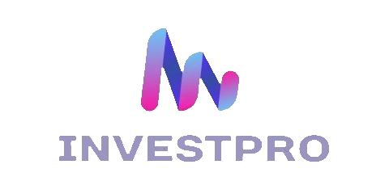

Home
Sobre Nós
Serviços
Notícias
Contatos
Entrar
Criar Conta
Quiz Perfil de Investimentos
Pergunta 1
Qual é o seu principal objetivo ao investir?
Preservar o capital
Equilibrar crescimento e segurança
Buscar retornos mais altos, mesmo que isso signifique assumir mais riscos
Enviar Resposta
Pergunta 2
Como você se sentiria se o valor dos seus investimentos caísse temporariamente?
Muito preocupado
Preocupado, mas disposto a esperar para recuperar as perdas
Não me preocuparia muito, desde que haja potencial para crescimento a longo prazo
Enviar Resposta
Pergunta 3
Qual é o seu horizonte de investimento?
Curto prazo (até 2 anos)
Médio prazo (2 a 5 anos)
Longo prazo (mais de 5 anos)
Enviar Resposta
Pergunta 4
Quanto tempo você está disposto a dedicar ao acompanhamento dos seus investimentos?
Não tenho tempo para acompanhar de perto, prefiro opções mais estáveis
Estou disposto a acompanhar regularmente, mas não todos os dias
Estou disposto a acompanhar diariamente e fazer ajustes conforme necessário
Enviar Resposta
Pergunta 5
Como você se sente sobre a ideia de diversificar seus investimentos?
Acho importante para reduzir o risco, mesmo que signifique sacrificar retornos potenciais
Estou aberto à diversificação, desde que não comprometa muito o potencial de crescimento
Não me importo muito com a diversificação, desde que eu possa buscar retornos mais altos
Enviar Resposta
Obrigado por responder o Quiz!
Seu perfil de Investimento é: